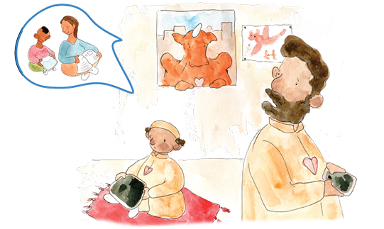

Introduction
Please read this Action for Heroes Guide BEFORE you begin to read the storybook with the children and continue to use its advice after you finish.
The storybook, “My Hero is You, How kids can fight COVID-19!” , explains how children can protect themselves, their families and friends from the coronavirus and how to manage difficult emotions when confronted with our new and rapidly changing reality. You can read and download this book for free on the IASC website. It has been translated into 125+ languages and multi¬media adaptations have been made. Links to these resources are available at the end of this guide.
It is recommended that adults read the storybook WITH the children. As they read the storybook, this Guide directs adults about how to have Heart-to-Heart CHATS with children and educate them about the coronavirus and COVID-19. It explains how adults can create safe spaces for children to openly share their feelings, including their fears and worries about the coronavirus and frustrations at their changed daily lives. The Guide also directs adults about how to promote positive actions that children can take to protect themselves and others.
It is best when children are informed with accurate information about the coronavirus and its risks and how to prevent the COVID-19 infectious disease by adults who are known to them and trusted like parents, caregivers and teachers. The language used to explain the facts can be simple and direct and modified to the age of the children. Children who are not well informed are at risk of not taking precautions seriously and putting themselves and others at risk of infection. Also, poorly informed children can become unnecessarily anxious because they feel adults are hiding the truth from them. Even from a young age, children are aware of changes around them, so it is important to speak with even young children about what is going on.
Since the storybook encourages children to be heroes and take an active role in prevention, it is important for adults to balance an explanation of the problems and risks of the coronavirus with clear descriptions about how adults will protect the children and what the children can do to prevent infection and protect themselves and others.
The storybook contains many important messages for adults to CHAT about with the children. As adults and children read the storybook, they will see 9 CHAT bubbles located throughout the book which look like this:
3